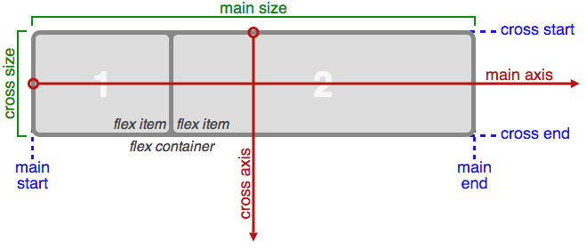
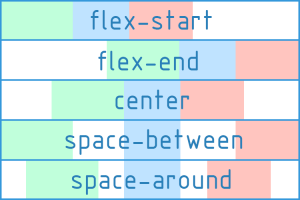
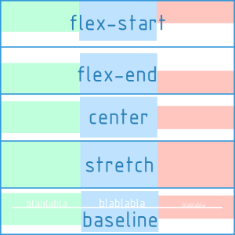

Правило @media позволяет указать тип носителя, для которого будет применяться указанный стиль, но так же, наряду с типами носителей в CSS3 включена поддержка различных технических параметров устройств, на основе которых требуется загружать те или иные стили.
К примеру, можно определить разрешение смартфона и для него установить свои отдельные свойства, а для остальных устройств другие. Также можно выявить различные характеристики вроде наличия монохромного экрана, ориентации (портретная или альбомная) и др. Все характеристики легко комбинируются.
Медиа-запросы – это понятный и простой способ для создания адаптивного макета сайта с помощью CSS.
Такой макет подстраивается под разрешение монитора и окна браузера, меняя при необходимости ширину макета, число колонок, размеры изображений и текста. Медиа-запросы ограничивают ширину макета и при достижении этого значения (к примеру за счёт уменьшения окна или при просмотре на устройстве с указанным размером) уже применяется другой стиль.
Типы носителей
Правило @media позволяет указать тип носителя, для которого будет применяться указанный стиль. В качестве типов носителя выступают следующие устройства
Типы носителей
Тип
Описание
all
Все типы. Это значение используется по умолчанию.
print
Печатающие устройства вроде принтера.
screen
Экран монитора.
speech
Речевые синтезаторы, а также программы для воспроизведения текста вслух. Сюда, например, можно отнести речевые браузеры.
Синтаксис
Медиа запросы позволяют использовать особые css-стили для конкретных устройств вывода. До появления CSS3 разработчики могли подключать специальные стили для разных устройств только с помощью атрибута media тэга <link>
Все медиа-запроса начинаются с правила @media, после чего следует условие, в котором используются один или несколько типов носителя(если их более одного, то они перечисляются через запятаю) и выражение для проверки характеристик устройства, содержащее логические операторы и медиа-функции. После чего следуют обязательные фигурные скобки, внутри которых пишутся стилевые правила.
Медиа запросы представляют собой логические выражения, которые могут быть истинными или ложными. Когда html-документ рендерится, браузер определяет тип носителя информации. В самом простом случаи запрос будет истинным, если указанный тип носителя соответствует типу носителя, на котором запущен браузер(при условии что нет проверки на различные характеричтики устройства). В этом случае к указанным в правиле @media селекторам применятся соответствующие css-стили.
@mediascreen { h1: 1.25rem; }
А вообще, с помощью логических операторов можно создавать комбинированные медиазапросы, в которых будет проверяться условие на соответсвие нескольким характеристикам устройства.
Логические операторы
Оператор
Описание
AND
Логическое И. Указывается для объединения нескольких условий.
, (запятая)
Оператор запятая работает по аналогии с логическим оператором or.
NOT
Оператор not позволяет сработать медиа запросу в противоположном случае. Если ключевое слово not указывается в начале медиа-запроса, то отрицание применяется ко всему запросу целиком. Если медиа-запрос составлен с использованием оператора запятая, то отрицание будет распространяться только на ту часть, которая идет до запятой. Оператор not имеет низкий приоритет и оценивается в запросе последним.
ONLY
Применяется для старых браузеров, которые не поддерживают медиа-запросы. Старые браузеры считают ключевое слово only типом носителя, но поскольку такого типа не существует, то игнорируют весь стиль целиком. Современные браузеры воспринимают запись с only и без него одинаково.
Медиа-функции(характеристики медианосителя)
К характеристикам медианосителя относятся проверяемые параметры устройства. Значения, которые используются при задании характеристик, являются контрольными точками.
Стиль выполняется в том случае, если запрос возвращает истину, иными словами, указанные условия выполняются.
Большинство функций содержат приставку min- и max-, которая соответствуют минимальному и максимальному значению.
(min-, max-)width
Проверяет ширину области просмотра. Значения задаются в единицах длины. Обычно для проверки используются минимальные и максимальные значения ширины.
min-width применяет правило если ширина области просмотра больше значения, указанного в запросе, max-width — ширина области просмотра меньше значения, указанного в запросе.
Так, max-width: 400px означает, что ширина окна браузера меньше 400 пикселов, а min-width: 1000px, наоборот, сообщает, что ширина окна больше 1000 пикселов.
При составлении медиа запросов нужно ориентироваться на так называемые переломные точки дизайна, т.е. такие значения ширины области просмотра, в которых дизайн сайта существенно меняется, например, появляется горизонтальная полоса прокрутки. Чтобы определить эти точки, нужно открыть сайт в браузере и постепенно уменьшать область просмотра.
Чтобы адаптировать дизайн сайта под разные устройства, необходимо задать разные стили для разных разрешений экранов.
Принимает два значения: (orientation: portrait) и (orientation: landscape).
Flexible Box Layout Module
CSS Flexible Box Layout Module — это система компоновки элементов.
Модуль Flexbox-лейаута (flexible box — «гибкий блок», на данный момент W3C Candidate Recommendation) ставит задачу предложить более эффективный способ вёрстки, выравнивания и распределения свободного места между элементами в контейнере, даже когда их размер неизвестен и/или динамический (отсюда слово «гибкий»).
Главная задумка flex-вёрстки в наделении контейнера способностью изменять ширину/высоту (и порядок) своих элементов для наилучшего заполнения пространства (в большинстве случаев — для поддержки всех видов дисплеев и размеров экранов). Flex-контейнер растягивает элементы для заполнения свободного места или сжимает их, чтобы предотвратить выход за границы.
Самое важное, flexbox-лейаут не зависит от направления в отличие от обычных лейаутов (блоки, располагащиеся вертикально, и инлайн-элементы, располагающиеся горизонтально).
Спецификация CSS Flexible Box Layout Module (в народе Flexbox) призвана кардинально изменить ситуацию в лучшую сторону при решении огромного количества задач. Flexbox позволяет контролировать размер, порядок и выравнивание элементов по нескольким осям, распределение свободного места между элементами и многое другое.
Flexbox-лейаут лучше всего подходит для составных частей приложения и мелкомасштабных лейаутов, в то время как Grid-лейаут больше используется для лейаутов большого масштаба.
Преимущество
Основные преимущества flexbox
Все блоки очень легко делаются “резиновым”, что уже следует из названия “flex”. Элементы могут сжиматься и растягиваться по заданным правилам, занимая нужное пространство.
Благодаря flexbox элементы ведут себя предсказуемо на всех типах устройств и при различных размерах экрана. Модель гибкой разметки имеет преимущества перед блочной разметкой за счет отсутствия плавающих элементов (свойство float) и отсутствия схлопывания внешних отступов margin.
Расположение элементов в основном потоке документа не имеет решающего значения. Его можно поменять в CSS. Это особенно важно для некоторых аспектов responsive-верстки.
Элементы могут автоматически выстраиваться в несколько строк/столбцов, занимая все предоставленное место.
Множество языков в мире используют написание справа налево rtl (right-to-left), в отличии от привычного нам ltr (left-to-right). Flexbox адаптирован для этого. В нем есть понятие начала и конца, а не права и лева. Т.е. в браузерах с локалью rtl все элементы будут автоматически расположены в реверсном порядке.
Поддержка браузерами
Поддержка браузерами пока неполная. Виноват в этом в основном Internet explorer, который поддерживает спецификацию с 10 версии.
Поддержка в браузерах
IE -ms-
Chrome
Opera
Safari
Firefox
Концепция
Flexbox - это целый модуль, а не просто единичное свойство, он объединяет в себе множество свойств. Некоторые из них должны применяться к контейнеру (родительскому элементу, так называемому flex-контейнеру), в то время как другие свойства применяются к дочерним элементам, или flex-элементам.
Первое, что нужно сделать – это указать контейнеру display:flex или display:inline-flex.
После установки данных значений свойства, каждый дочерний элемент автоматически становится flex-элементом, выстраиваясь в ряд колонками одинаковой высоты, равной высоте блока-контейнера. При этом блочные и строчные дочерние элементы ведут себя одинаково, т.е. ширина блоков равна ширине их содержимого с учетом внутренних полей и рамок элемента.
Если родительский блок содержит текст или изображения без оберток, они становятся анонимными flex-элементами. Текст выравнивается по верхнему краю блока-контейнера, а высота изображения становится равной высоте блока, т.е. оно деформируется.
В модели flexbox для внутренних блоков не работают такие css-свойства, как float, clear, vertical-align. На flex-контейнер не оказывают влияние свойства column, задающие колонки в тексте.
Flexbox основывается на «направлениях flex-потока». Ознакомьтесь с этой схемой из спецификации, разъясняющей основную идею flex-лейаутов.

Понятие главной и поперечной оси
Одним из основных понятий в fleхbox являются оси.
Главной осью flex-контейнера является направление, в соответствии с которым располагаются все его дочерние элементы.
Поперечной осью называется направление, перпендикулярное главной оси.
Главная ось в ltr локали по умолчанию располагается слева направо. Поперечная – сверху вниз.
Направление главной оси flex-контейнера можно задавать, используя базовое CSS свойство flex-direction.
Свойства flex-контейнера
flex-direction
Свойство flex-direction задаёт направление основных осей в контейнере и тем самым определяет положение флексов в контейнере.
Задание направления главной и поперечной оси
Доступные значения flex-direction:
row - значение по умолчанию, слева направо (в rtl справа налево). Flex-элементы выкладываются в строку.
row-reverse - направление справа налево (в rtl слева направо). Flex-элементы выкладываются в строку относительно правого края контейнера (в rtl — левого).
column - направление сверху вниз. Flex-элементы выкладываются в колонку.
column-reverse - колонка с элементами в обратном порядке, снизу вверх.
justify-content
Определяет, как браузер распределяет пространство вокруг флекс-элементов вдоль главной оси контейнера.
Доступные значения justify-content:
flex-start - (значение по умолчанию) блоки прижаты к началу главной оси.
flex-end - блоки прижаты к концу главной оси.
center - блоки располагаются в центре главной оси.
space-between - блоки выравниваются по главной оси, свободное место между ними распределяется следующим образом: первый блок располагается в начале flex-контейнера, последний блок – в конце, все остальные блоки равномерно распределены в оставшемся пространстве, а свободное пространство равномерно распределяется между элементами.
space-around - все блоки равномерно распределены вдоль главной оси, разделяя все свободное пространство поровну.

Распределение простаранство между блоками на главной оси
align-items
Свойство align-items определяет, то как будут выравниваться флекс-элементы внутри флекс-контейнера вдоль поперечной оси.
Доступные значения align-items:
flex-start - блоки прижаты к началу поперечной оси.
flex-end - блоки прижаты к концу поперечной оси.
center - блоки располагаются в центре поперечной оси.
baseline - блоки выравниваются по базовой линии(baseline).
stretch - (значение по умолчанию) блоки растягиваются, занимая все пространство по высоте поперечной оси, при этом учитываются min-width/max-width, если таковые заданы.

Выравнивание вдоль поперечной оси
Оси и выравнивания по ним – это основы flex.
Далее мы поговорим о организации блоков внутри flex-контейнера.
flex-wrap
Все примеры, которые мы приводили выше, были построены с учетом однострочного (одностолбцового) расположения блоков. По умолчанию flex-контейнер всегда будет располагать блоки внутри себя в одну линию. Однако, спецификацией также поддерживается многострочный режим. За многострочность внутри flex-контейнера отвечает CSS свойство flex-wrap.
Свойство flex-wrap указывает, следует ли флексам располагаться в одну строку или можно занять несколько строк. Если перенос строк допускается, то свойство также позволяет контролировать направление, в котором выкладываются строки.
nowrap - (значение по умолчанию) блоки расположены в одну линию слева направо (в rtl справа налево).
wrap - блоки переносятся, располагаясь в несколько горизонтальных рядов (если не помещаются в один ряд) в направлении слева направо (в rtl справа налево).
wrap-reverse - то-же что и wrap, но блоки располагаются в обратном порядке.
Block 1
Block 2
Block 3
Block 4
Block 5
Block 6
Block 7
Block 8
flex-flow
Свойство предоставляет возможность в одном свойстве задать направление главной оси и многострочность поперечной оси, т.е. сокращённая запись свойств flex-direction и flex-wrap. Значение по умолчанию flex-flow: row nowrap;.
flex-flow: <flex-direction> || <flex-wrap>;
Первым параметром идёт направление flex-direction - указывает направление главной оси. Значение по умолчанию row.
Следующим параметром идёт многострочность flex-wrap - задаёт многострочность поперечной оси. Значение по умолчанию nowrap.
Существует также свойство align-content, которое определяет то, каким образом flex-контейнер выравнивает строки на поперечной оси, при наличии свободного места. Свойство работает аналогично тому, как это делает justify-content на главной оси.
Важно: align-content работает только в многострочном режиме (т.е. в случае flex-wrap:wrap; или flex-wrap:wrap-reverse;) при указании высоты flex-контейнера.
Доступные значения align-content:
flex-start - ряды блоков прижаты к началу flex-контейнера.
flex-end - ряды блоков прижаты к концу flex-контейнера.
center - ряды блоков находятся в центре flex-контейнера.
space-between - первый ряд блоков располагается в начале flex-контейнера, последний ряд блоков блок – в конце, все остальные ряды равномерно распределены в оставшемся пространстве.
space-around - ряды блоков равномерно распределяются по высоте, свободное пространство добавляется сверху и снизу строки.
stretch - (значение по умолчанию) ряды блоков равномерно растягиваются, заполняя все доступное пространство.
Выравнивание строк по поперечной оси
СSS свойства flex-wrap и align-content должны применяться непосредственно к flex-контейнеру, а не к его дочерним элементам.
Свойства для дочерних элементов
flex-basis
Задает изначальный размер по главной оси для flex-блока до того, как к нему будут применены преобразования, основанные на других flex-факторах. Может быть задан в любых единицах измерения длинны (px, em, %, ...) или auto(по умолчанию). Если задан как auto – за основу берутся размеры блока (width, height), которые, в свою очередь, могут зависеть от размера контента, если не указанны явно.
Свойство позволяет задать базовую ширину flex-элемента, относительно которой будет происходить растяжение flex-grow или сужение flex-shrink элемента. Не наследуется.
flex-grow
Определяет для flex-элемента возможность «вырастать» при необходимости. Принимает безразмерное значение, служащее в качестве пропорции. Оно определяет, какую долю свободного места внутри контейнера элемент может занять.
Если у всех элементов свойство flex-grow задано как 1, то каждый потомок получит внутри контейнера одинаковый размер. Если вы задали одному из потомков значение 2, то он заберёт в два раза больше места, чем другие.
Т.е абсолютное значение flex-grow не определяет точную ширину. Оно определяет его степень “жадности” по отношению к другим flex-блокам того же уровня.
flex-shrink
Свойство указывает коэффициент уменьшения ширины flex-элемента относительно других flex-элементов, внутри flex-контейнера в случае недостатка свободного места, чтобы разместить все элементы в одну строку. По умолчанию коэффициент сжатия флексов в контейнере равен 1.
Работает только если для элемента задана ширина с помощью свойства flex-basis или width.
Коэффициент сжатия может быть как положительное целое, так и дробное число.
Короткая запись для свойств flex-grow, flex-shrink и flex-basis
Свойство представляет собой сокращённую запись свойств flex-grow, flex-shrink и flex-basis. Значение по умолчанию: flex: 0 1 auto;. Можно указывать как одно, так и все три значения свойств. Второй и третий параметры (flex-shrink, flex-basis) необязательны.
/* Второй и третий параметры необязательны */flex: 4;
W3C рекомендует использовать сокращённую запись, так как она правильно сбрасывает любые неуказанные компоненты, чтобы подстроиться под типичное использование.
align-self
Свойство отвечает за выравнивание отдельно взятого flex-элемента по высоте flex-контейнера. Переопределяет выравнивание, заданное align-self.
flex-start - flex-блок прижат к началу поперечной оси.
flex-end - flex-блок прижат к концу поперечной оси.
center - flex-блок располагаются в центре поперечной оси.
baseline - flex-блок выравнен по baseline.
stretch - (значение по умолчанию) flex-блок растянут, чтобы занять все доступное место по поперечной оси, при этом учитываются min-width/max-width, если таковые заданы.
order
По умолчанию flex-элементы располагаются в исходном порядке. Тем не менее, свойство order может управлять порядком их расположения в контейнере.
Свойство определяет порядок, в котором flex-элементы отображаются внутри flex-контейнера. По умолчанию для всех flex-элементов задан порядок order: 0; и они следуют друг за другом по мере добавления во flex-контейнер. Самый первый flex-элемент по умолчанию расположен слева. Чтобы поставить любой flex-элемент в начало строки, ему нужно назначить order: -1;, в конец строки — order: 1;.
Значение order не задает абсолютную позицию элемента в последовательности. Оно определяет вес позиции элемента.